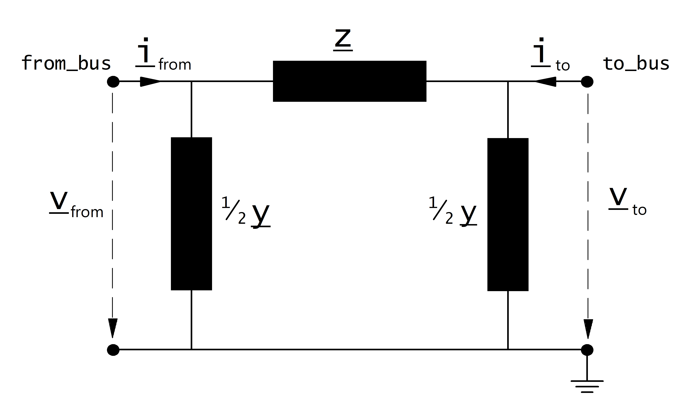

Line¶
Create Function¶
Lines can be either created from the standard type library (create_line) or with custom values (create_line_from_parameters).
Input Parameters¶
net.line
Parameter |
Datatype |
Value Range |
Explanation |
name |
string |
name of the line |
|
std_type |
string |
standard type which can be used to easily define line parameters with the pandapower standard type library |
|
from_bus* |
integer |
Index of bus where the line starts |
|
to_bus* |
integer |
Index of bus where the line ends |
|
length_km* |
float |
\(>\) 0 |
length of the line [km] |
r_ohm_per_km* |
float |
\(\geq\) 0 |
resistance of the line [Ohm per km] |
x_ohm_per_km* |
float |
\(\geq\) 0 |
inductance of the line [Ohm per km] |
c_nf_per_km* |
float |
\(\geq\) 0 |
capacitance of the line [nano Farad per km] |
g_us_per_km* |
float |
\(\geq\) 0 |
dielectric conductance of the line [micro Siemens per km] |
max_i_ka* |
float |
\(>\) 0 |
maximal thermal current [kilo Ampere] |
parallel* |
integer |
\(\geq\) 1 |
number of parallel line systems |
df* |
float |
0…1 |
derating factor (scaling) for max_i_ka |
type |
string |
Naming conventions:
«ol» - overhead line
«cs» - underground cable system
|
type of line |
max_loading_percent** |
float |
\(>\) 0 |
Maximum loading of the line |
endtemp_degree*** |
float |
\(>\) 0 |
Short-Circuit end temperature of the line |
in_service* |
boolean |
True / False |
specifies if the line is in service. |
*necessary for executing a power flow calculation
**optimal power flow parameter
***short-circuit calculation parameter
Примечание
Defining a line with length zero leads to a division by zero in the power flow and is therefore not allowed. Lines with a very low impedance might lead to convergence problems in the power flow for the same reason. If you want to directly connect two buses, please use the switch element instead of a line with a small impedance!
net.line_geodata
Parameter |
Datatype |
Explanation |
coords |
list |
List of (x,y) tuples that mark the inflexion points of the line |
Electric Model¶
Lines are modelled with the \(\pi\)-equivalent circuit:
{kind=link}
The elements in the equivalent circuit are calculated from the parameters in the net.line dataframe as:
The power system frequency \(f\) is defined when creating an empty network, the default value is \(f = 50 Hz\).
The parameters are then transformed in the per unit system:
Where the reference voltage \(V_{N}\) is the nominal voltage at the from bus and the rated apparent power \(S_{N}\) is defined system wide in the net object (see Unit Systems and Conventions).
Примечание
pandapower assumes that nominal voltage of from bus and to bus are equal, which means pandapower does not support lines that connect different voltage levels. If you want to connect different voltage levels, either use a transformer or an impedance element.
Result Parameters¶
net.res_line
Parameter |
Datatype |
Explanation |
p_from_mw |
float |
active power flow into the line at «from» bus [MW] |
q_from_mvar |
float |
reactive power flow into the line at «from» bus [MVar] |
p_to_mw |
float |
active power flow into the line at «to» bus [MW] |
q_to_mvar |
float |
reactive power flow into the line at «to» bus [MVar] |
pl_mw |
float |
active power losses of the line [MW] |
ql_mvar |
float |
reactive power consumption of the line [MVar] |
i_from_ka |
float |
Current at to bus [kA] |
i_to_ka |
float |
Current at from bus [kA] |
i_ka |
float |
Maximum of i_from_ka and i_to_ka [kA] |
loading_percent |
float |
line loading [%] |
The power flow results in the net.res_line table are defined as:
net.res_line_est
The state estimation results are put into net.res_line_est with the same definition as in net.res_line.
Parameter |
Datatype |
Explanation |
p_from_mw |
float |
active power flow into the line at «from» bus [MW] |
q_from_mvar |
float |
reactive power flow into the line at «from» bus [MVar] |
p_to_mw |
float |
active power flow into the line at «to» bus [MW] |
q_to_mvar |
float |
reactive power flow into the line at «to» bus [MVar] |
pl_mw |
float |
active power losses of the line [MW] |
ql_mvar |
float |
reactive power consumption of the line [MVar] |
i_from_ka |
float |
Current at to bus [kA] |
i_to_ka |
float |
Current at from bus [kA] |
i_ka |
float |
Maximum of i_from_ka and i_to_ka [kA] |
loading_percent |
float |
line loading [%] |